Required Special Tools
REQUIRED SPECIAL TOOLSThese tools are available from American Honda.
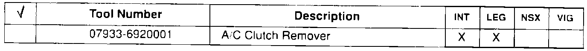
Air Conditioning Tools
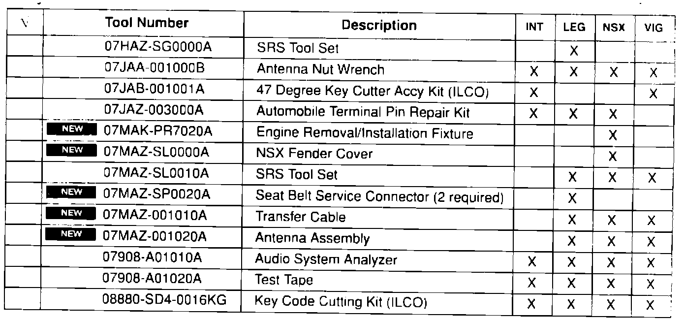
Body Tools
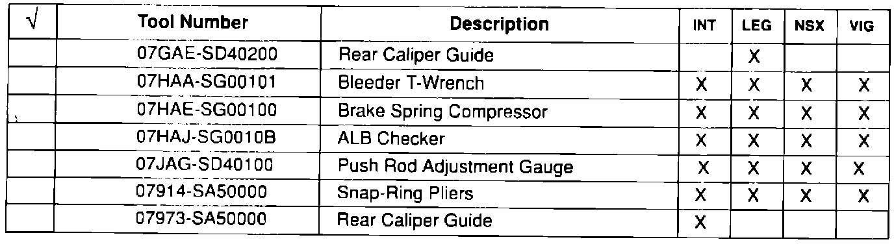
Brake Tools
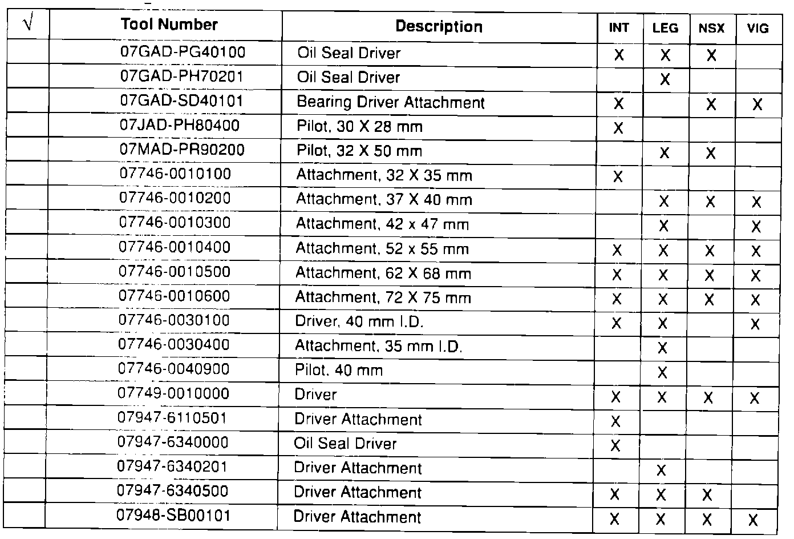
Common Bearing/Seal Drivers
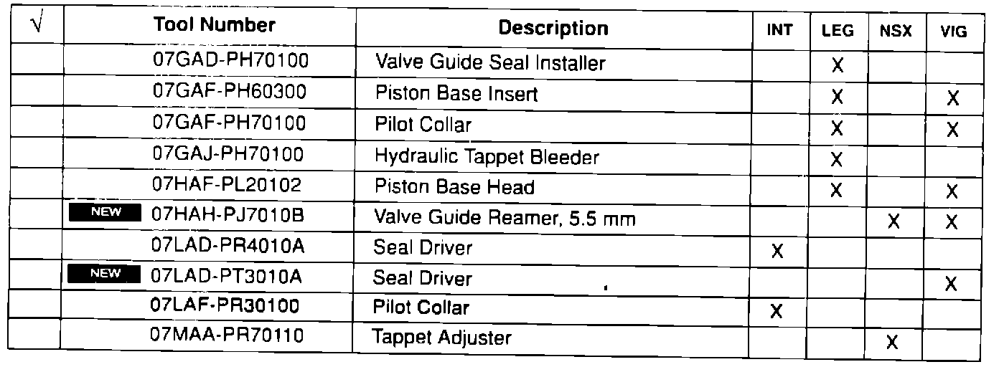
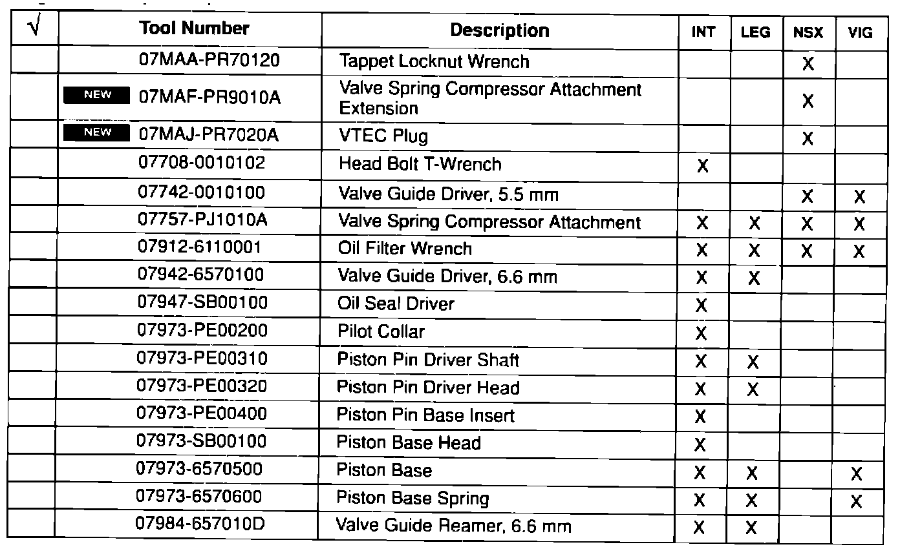
Engine Tools
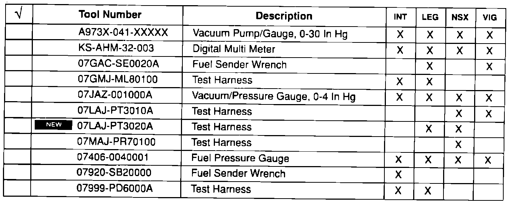
Fuel/Emissions Tools
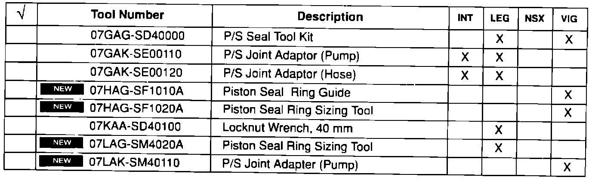
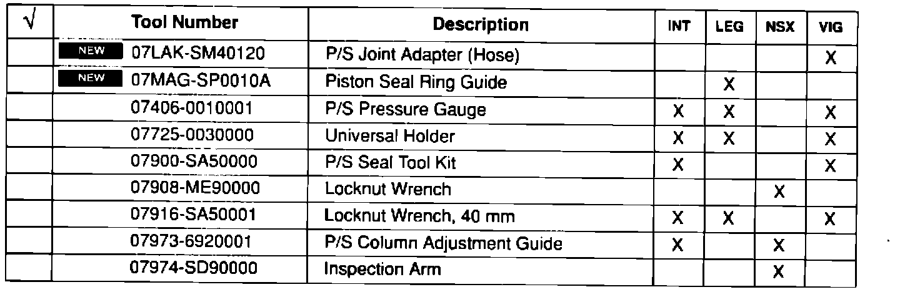
Steering Tools
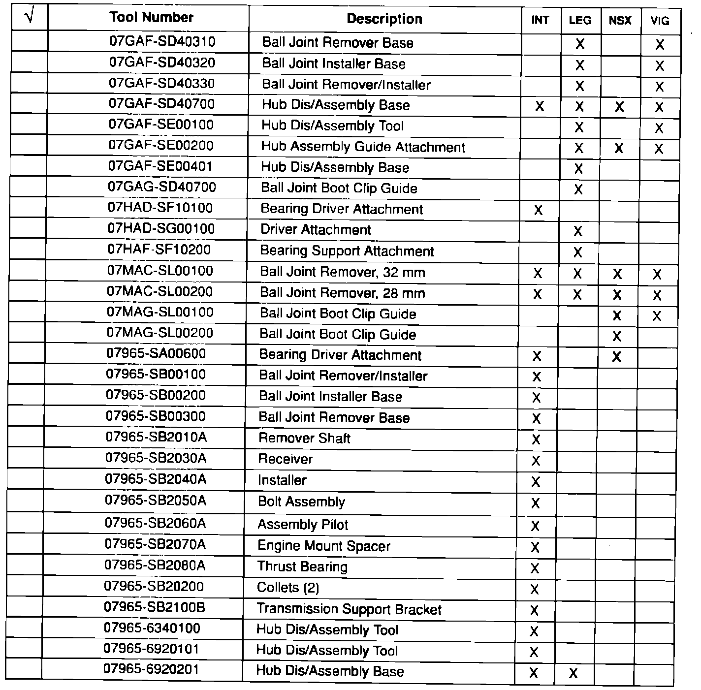
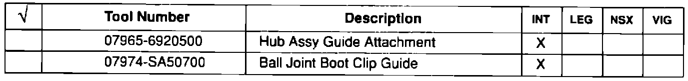
Suspension Tools
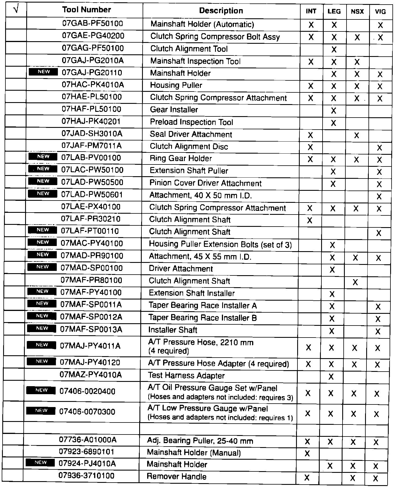
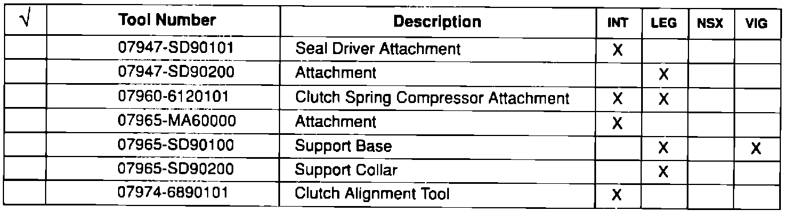
Transmission/Clutch Tools